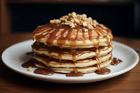

Ingredients
½ cup maple syrup
¼ cup creamy peanut butter
Instructions
- Mix ingredients in bowl.
- Heat in microwave at 30 second intervals. Whisk well to fully combine.
Source:
Ingredients, equipment, and instructions have been taken from here
Images have been taken from here